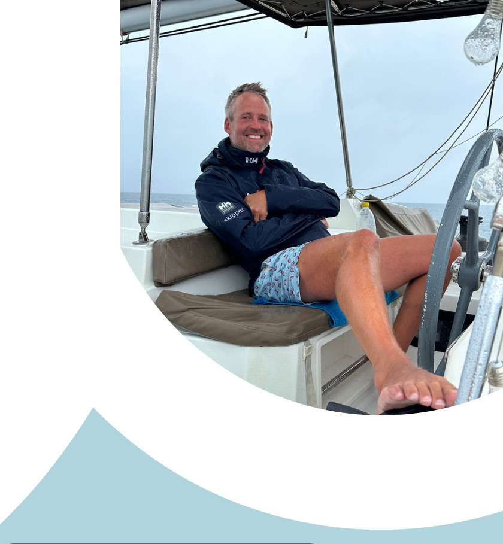

Seite 4
Skipper
Urs Minder – Erfahrung, Sicherheit und entspannte Segelwochen.
Urs Minder
- Wohnhaft in Zürich
- 42 Jahre
- Hochseeschein seit 2019
- ca. 6'000 Seemeilen
- Über 20 Törns als Skipper für eine Agentur
Reviererfahrung
Sardinien, Kroatien, Griechenland, Karibik (Guadeloupe, BVI, Grenada) und Dublin.
Zertifikate
- SRC Certificate
- Nothelfer
- A-, B- und D-Schein

Sicherheitsphilosophie
Vor jedem Törn stehen Crew-Briefing, Wetter, Route, Sicherheitseinweisung und MoB-Abläufe im Fokus. Der Törn ist entspannt, aber klar strukturiert: Sicherheit zuerst, dann Genuss, Natur und gemeinsame Segelerlebnisse.